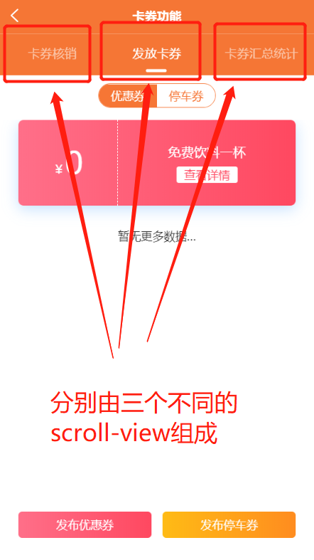
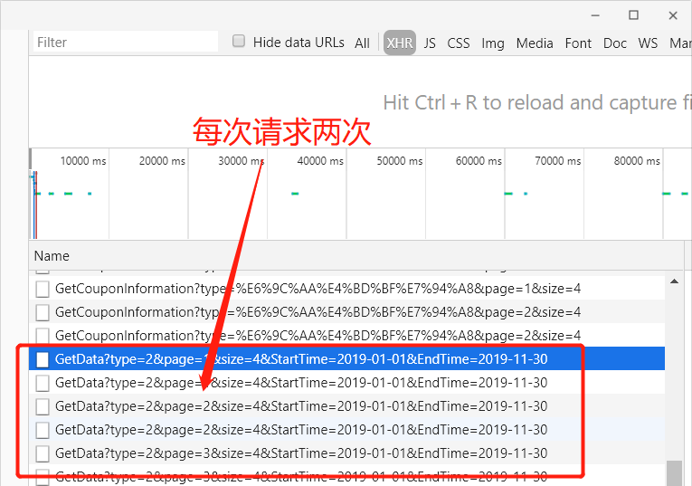

前段时间使用scroll-view可滚动视图区域容器来做多个不同内容的展示（在我这个页面中同时使用了三个scroll-view做数据展示），因为这几个展示的内容的数据都比较的多，因此为了页面的数据加载顺畅决定使用上拉加载（简单的说就是数据分页显示）。
页面组成如下图所示：

| 属性名 | 类型 | 默认值 | 说明 | 平台差异说明 |
|---|---|---|---|---|
| scroll-x | Boolean | false | 允许横向滚动 | |
| scroll-y | Boolean | false | 允许纵向滚动 | |
| upper-threshold | Number | 50 | 距顶部/左边多远时（单位px），触发 scrolltoupper 事件 | |
| lower-threshold | Number | 50 | 距底部/右边多远时（单位px），触发 scrolltolower 事件 | |
| scroll-top | Number | 设置竖向滚动条位置 | ||
| scroll-left | Number | 设置横向滚动条位置 | ||
| scroll-into-view | String | 值应为某子元素id（id不能以数字开头）。设置哪个方向可滚动，则在哪个方向滚动到该元素 | ||
| scroll-with-animation | Boolean | false | 在设置滚动条位置时使用动画过渡 | |
| enable-back-to-top | Boolean | false | iOS点击顶部状态栏、安卓双击标题栏时，滚动条返回顶部，只支持竖向 | 微信小程序 |
| show-scrollbar | Boolean | false | 控制是否出现滚动条 | App-nvue 2.1.5+ |
| @scrolltoupper | EventHandle | 滚动到顶部/左边，会触发 scrolltoupper 事件 | ||
| @scrolltolower | EventHandle | 滚动到底部/右边，会触发 scrolltolower 事件 | ||
| @scroll | EventHandle | 滚动时触发，event.detail = {scrollLeft, scrollTop, scrollHeight, scrollWidth, deltaX, deltaY} |
第一个考虑的上拉加载事件：onReachBottom页面滚动到底部的事件，常用于上拉加载下一页数据。但是如使用scroll-view导致页面级没有滚动，则触底事件不会被触发，所以这里存在的问题是有时候无法触发onReachBottom。
最终选择了适用scroll-view自带的滚到底部触发事件scrolltolower事件，虽然这个事件确实能够实现上拉加载数据分页的功能，但是这个是事件存在两个问题。第一个问题就是当滚动条滚动到底部时会多次触发scrolltolower事件，第二个问题是当页面由第一个scroll-view（该页面已经到了的最底部了）切换到第二个scroll-view时会自动滚动到页面的最底部（即第二个页面默认已经到了最底部）。
数据加载多次如下图所示：

在scrolltolower触发事件中设定一个定时器setTimeout(callback, delay, rest)，在定时到期以后执行注册的回调函数(简称防抖)。
代码如下所示（简单示例）：
<view>
<scroll-view :scroll-top="scrollTop" scroll-y="true" class="scroll-Y" @scrolltoupper="upper" @scrolltolower="lower"
@scroll="scroll">
<view id="demo1" class="scroll-view-item uni-bg-red">A</view>
<view id="demo2" class="scroll-view-item uni-bg-green">B</view>
<view id="demo3" class="scroll-view-item uni-bg-blue">C</view>
</scroll-view>
</view>//滚动到最底部触发事件
lower() {
//1s后执行一次
setTimeout(() => {
//TODO这里填写你加载数据的方法
this.getData();
}, 1000)；
},设置一个scrollTop设置竖向滚动条的位置，首先默认为0，当页面向下滚动会触发scroll-top事件从而改变scrollTop的值，当切换到第二个scroll-view时在默认设置scrollTop为0，那么在切换到第二个页面的同时页面的竖向滚动条的位置会默认滚动到最顶部，从而解决了默认滚动到最底部加载多次数据的问题。
代码如下所示（简单示例）：
<view>
<scroll-view :scroll-top="scrollTop" scroll-y="true" class="scroll-Y" @scrolltoupper="upper" @scrolltolower="lower"
@scroll="scroll" @click="changeScrollView">
<view id="demo1" class="scroll-view-item uni-bg-red">A</view>
<view id="demo2" class="scroll-view-item uni-bg-green">B</view>
<view id="demo3" class="scroll-view-item uni-bg-blue">C</view>
</scroll-view>
</view>export default {
data() {
return {
scrollTop: 0
}
},
methods: {
//滚动时触发事件
scroll: function(e) {
// console.log(e.detail.scrollTop);
this.scrollTop = e.detail.scrollTop;
},
//切换scroll-view事件
changeScrollView(){
this.scrollTop=0;//回到最顶部
},
}
}